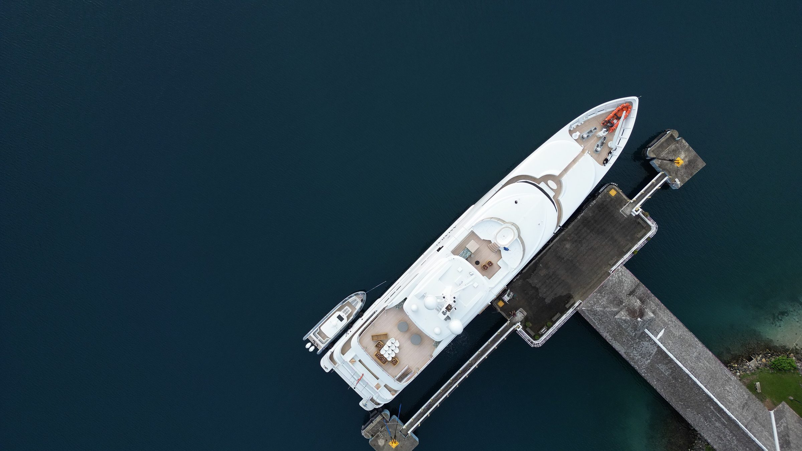

Türkiye’den Saint-Tropez’e, 12 ülkede 93 limanda gulet, motoryat ve katamaran. Destinasyonunuzu seçin, yatınızı belirleyin; rezervasyonunuz üç adımda, güvenle tamamlansın.
12 ülke, 93 liman. Ülkenize dokunun, limanınızı seçin.
Birkaç saniyeGulet’ten süper yata; saatlik, günlük ya da haftalık. Her türün güncel başlangıç fiyatıyla.
Dilediğiniz günSeçtiğiniz yatlar iş ortağımızın güvenli sayfasında açılır; ödeme ve onay orada, şeffaf biçimde tamamlanır.
Güvenli ödemeHizmet verdiğimiz 12 ülke. Bir ülkeye dokunun; limanları açılsın, size en uygununu seçin.
Seçimlerinizi gözden geçirin; yatlar iş ortağımızın güvenli sayfasında, seçtiğiniz tarihle açılsın.

Önce bir liman seçin.
Rezervasyon öncesi en çok sorulanlar. Başka bir sorunuz varsa bize yazın.
ViraCheck yat kiralamaz; size uygun yatı bulmanızı sağlar. Türkiye’deki yatlar Viravira, diğer ülkeler SamBoat ve SkipperCity, tekne turları GetYourGuide üzerinden açılır. Rezervasyon, ödeme ve onay doğrudan bu iş ortaklarıyla yapılır.
Ödeme, iş ortağının kendi güvenli ödeme sayfasında yapılır. ViraCheck kart bilginizi hiçbir zaman görmez ve saklamaz.
Hayır. Bağlantılarımızdan iş ortağı bize komisyon ödeyebilir; ödediğiniz fiyata tek kuruş eklenmez.
Yata göre değişir. Her ilanda kaptanlı, mürettebatlı ya da kaptansız seçenekler ve fiyata neyin dahil olduğu açıkça yazılır; rezervasyondan önce ilan sayfasından kontrol edebilirsiniz.
İptal ve değişiklik koşulları her ilanın sayfasında belirtilir ve iş ortağının politikasına göre uygulanır. Rezervasyondan önce bu koşulları okumanızı öneririz.
ViraCheck’te hesap gerekmez. Rezervasyonu tamamlarken iş ortağı yalnızca rezervasyon için gereken bilgileri ister.
ViraCheck yat kiralamaz ve tur düzenlemez; size uygun yatı ve turu bulmanıza yardım eder. Fiyat, müsaitlik, ödeme ve iptal iş ortağıyla yürür. Başlangıç fiyatları Viravira’nın Türkiye’deki 12 ana limanında yaz sezonu için listelenen en düşük saatlik fiyatlardır (Kasım 2026); sezona ve tarihe göre değişir. Fotoğraflar temsilîdir; kaynakları Kaynaklar sayfasında.